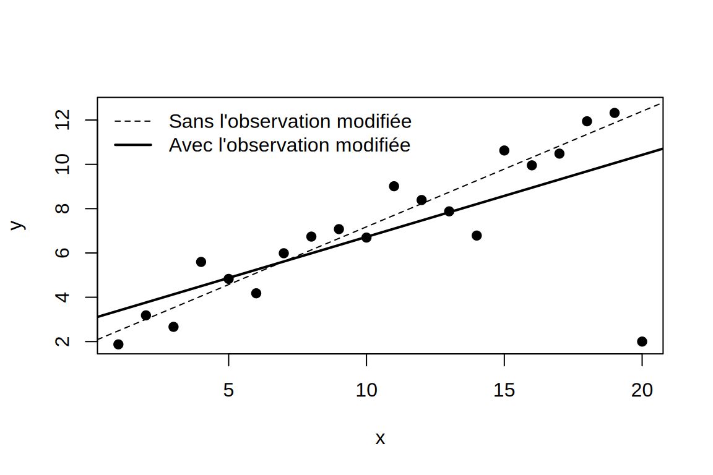
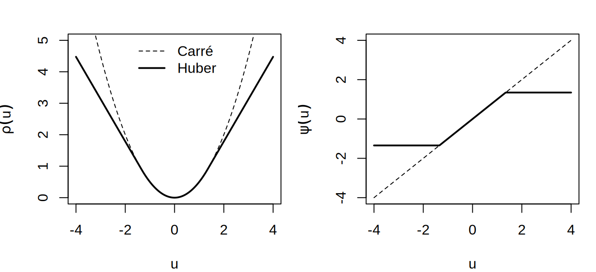

12 Ouverture sur la statistique robuste
Ce chapitre donne l’idée générale de la statistique robuste, sans en faire la théorie. Tous les modèles de ce livre supposent que les données sont engendrées par le modèle postulé. Les diagnostics de la régression linéaire et de la régression logistique (leviers, distance de Cook, DFBETAS) servent à repérer, après coup, les observations qui s’en écartent et qui tirent l’ajustement vers elles. La statistique robuste prend l’autre chemin. Au lieu de détecter puis de retirer ces observations à la main, elle construit des estimateurs robustes, qui, par conception, ne se laissent pas entraîner par une petite fraction de données atypiques.
12.1 Pourquoi les moindres carrés sont fragiles
Exemple — Une seule observation suffit
Prenez la moyenne \(\bar y\) d’un échantillon \(y_1,\ldots,y_n\). Remplacer une seule valeur \(y_n\) par \(y_n + d\) déplace la moyenne de \(d/n\), de sorte qu’il suffit de déplacer une seule observation pour rendre la moyenne aussi grande qu’on veut. La médiane, elle, reste bornée tant que moins de la moitié des observations sont contaminées : elle peut se déplacer, mais jamais au-delà des valeurs non contaminées.
L’estimateur des moindres carrés \(\hat{\boldsymbol\beta} = (\boldsymbol X^\top\boldsymbol X)^{-1}\boldsymbol X^\top\boldsymbol y\) a le même défaut, parce qu’il est linéaire en \(\boldsymbol y\). Une seule observation aberrante peut déplacer toute la droite ajustée, surtout si son levier \(h_i\) est élevé.
Un seul point déplacé (à droite) fait pivoter la droite des moindres carrés. Notez que rien dans la sortie de lm ne le signale : il faut regarder les diagnostics.
Le problème est structurel, puisque la perte quadratique \((y_i - \boldsymbol x_i^\top\boldsymbol\beta)^2\) croît sans borne avec le résidu. Les observations les plus éloignées du modèle sont donc précisément celles qui pèsent le plus dans l’estimation. L’estimateur du maximum de vraisemblance d’un GLM a le même défaut, pour la même raison.
12.2 Deux mesures de robustesse
Définition — Point de rupture
Le point de rupture (breakdown point) d’un estimateur est la plus petite fraction d’observations qu’il faut remplacer par des valeurs arbitraires pour que l’estimateur puisse prendre une valeur arbitraire. La moyenne et les moindres carrés ont un point de rupture de \(1/n\), soit \(0\) asymptotiquement, alors que la médiane atteint le maximum possible, \(1/2\).
Définition — Fonction d’influence
La fonction d’influence mesure l’effet d’une contamination infinitésimale au point \(z\) sur un estimateur \(T\), vu comme une fonctionnelle de la loi \(F\) :
\[ IF(z;T,F) = \lim_{\varepsilon\to 0}\frac{T\{(1-\varepsilon)F + \varepsilon\,\delta_z\} - T(F)}{\varepsilon}, \]
où \(\delta_z\) est la masse ponctuelle en \(z\). Un estimateur est dit B-robuste si sa fonction d’influence est bornée, auquel cas aucune observation isolée, aussi extrême soit-elle, ne peut le déplacer de façon illimitée. Par exemple, la fonction d’influence de la moyenne, \(IF(z) = z - \mu\), n’est pas bornée, alors que celle de la médiane l’est.
Remarque — Deux aspects complémentaires
Le point de rupture décrit la résistance à une contamination massive, alors que la fonction d’influence décrit la sensibilité à une contamination infinitésimale. Un bon estimateur robuste a un point de rupture élevé et une fonction d’influence bornée. Il garde aussi une efficacité raisonnable sous le modèle (une variance pas trop supérieure à celle de l’estimateur classique). On accepte de perdre un peu d’efficacité sous le modèle pour gagner beaucoup de stabilité en dehors.
12.3 L’idée centrale : borner la contribution de chaque observation
Il faut distinguer dès maintenant deux sortes d’observations atypiques. Une observation peut avoir un grand résidu (elle est atypique en \(y\), compte tenu de \(\boldsymbol x\)), ou un fort levier (elle est atypique en \(\boldsymbol x\)). Les deux ne demandent pas la même protection, et les estimateurs de cette section ne protègent pas tous contre les deux (voir le tableau à la fin de la section sur les M-estimateurs).
12.3.1 M-estimateurs
Définition — M-estimateur de régression
Au lieu de minimiser une somme de carrés, on minimise
\[ \sum_{i=1}^n \rho\!\left(\frac{y_i - \boldsymbol x_i^\top\boldsymbol\beta}{\sigma}\right), \]
où \(\rho\) est une fonction de perte symétrique qui croît moins vite que le carré pour les grands résidus. L’échelle \(\sigma\) est estimée de façon robuste (par exemple, la déviation absolue médiane des résidus). En dérivant, on obtient les équations d’estimation
\[ \sum_{i=1}^n \psi\!\left(\frac{y_i - \boldsymbol x_i^\top\boldsymbol\beta}{\sigma}\right)\boldsymbol x_i = \boldsymbol 0, \qquad \psi = \rho'. \]
Les moindres carrés correspondent à \(\rho(u) = u^2/2\) et \(\psi(u) = u\), non bornée.
Exemple — Fonction de Huber
Le choix classique est
\[ \rho_c(u) = \begin{cases} u^2/2 & \text{si } |u| \le c, \\ c|u| - c^2/2 & \text{si } |u| > c,\end{cases} \qquad \psi_c(u) = \max\{-c,\ \min(u, c)\}. \]
La perte est quadratique pour les petits résidus (comme les moindres carrés) et linéaire au-delà de \(c\). L’effet du résidu sur le score, \(\psi_c(u)\), est donc borné par \(c\) (mais pas celui de \(\boldsymbol x_i\), voir plus bas). Le choix \(c \approx 1{,}345\) conserve 95 % de l’efficacité des moindres carrés quand les erreurs sont normales.

Remarque — Poids et interprétation
Posons \(w_i = \psi(r_i)/r_i\), où \(r_i = (y_i - \boldsymbol x_i^\top\boldsymbol\beta)/\sigma\) est le résidu standardisé ; les équations d’estimation s’écrivent alors \(\sum_i w_i\,(y_i - \boldsymbol x_i^\top\boldsymbol\beta)\,\boldsymbol x_i = \boldsymbol 0\). Un M-estimateur est donc une régression par moindres carrés pondérés dont les poids décroissent avec la taille du résidu. En fait, il se calcule par IRLS, comme un GLM. Les poids \(\hat w_i\) en sortie sont un diagnostic utile, puisqu’une observation de poids proche de \(0\) a été reconnue comme atypique par l’estimateur lui-même. Notez qu’un poids faible signale une observation que l’estimateur a sous-pondérée (downweighted), pas nécessairement une erreur de saisie (voir la remarque « Deux lectures d’une observation atypique » plus bas).
Un M-estimateur de Huber protège contre les valeurs aberrantes en \(y\), mais pas contre les points à fort levier (aberrants en \(\boldsymbol x\)), parce que \(\boldsymbol x_i\) reste non borné dans le score. Les estimateurs à point de rupture élevé (S-estimateurs, MM-estimateurs, moindres carrés tronqués) corrigent ce défaut et sont aujourd’hui le choix par défaut. En R, ils sont offerts par MASS::rlm (M- et MM-estimateurs) et robustbase::lmrob (MM-estimateur).
Le tableau suivant résume la protection qu’offre chaque estimateur. Les deux colonnes du milieu décrivent la fonction d’influence, dans la direction des résidus et dans celle des leviers. La colonne du point de rupture décrit la résistance à une contamination massive.
| Estimateur | Grand résidu en \(y\) | Point à fort levier | Point de rupture | Calcul |
|---|---|---|---|---|
| Moindres carrés | influence non bornée (\(\psi(u) = u\)) | influence non bornée | \(1/n\) | explicite |
| Régression médiane (\(L_1\)) | influence bornée | influence non bornée | \(1/n\) | programme linéaire |
| M-estimateur de Huber | influence bornée par \(c\) | influence non bornée | \(1/n\) | IRLS |
| Estimateurs à point de rupture élevé (S, MM, moindres carrés tronqués) | influence bornée | point rejeté s’il est mal ajusté | jusqu’à \(1/2\) | plus complexe (optimisation non convexe, rééchantillonnage) |
Un point à fort levier n’est pas toujours nuisible : s’il suit la tendance des autres, il améliore la précision de l’estimation. C’est le point à fort levier mal ajusté qui fait pivoter la droite, comme dans l’exemple « Une seule observation suffit ».
12.3.2 Extension aux GLM
Remarque — GLM robustes
L’idée s’étend aux GLM en bornant le score. On remplace les équations du maximum de vraisemblance, \(\sum_i (y_i - \mu_i)\,\boldsymbol x_i\,\mu_i'/V(\mu_i) = \boldsymbol 0\), où \(\mu_i' = \partial\mu_i/\partial\eta_i\), par
\[ \sum_{i=1}^n \left[\psi_c(r_i)\, w(\boldsymbol x_i)\,\frac{\mu_i'}{\sqrt{\phi\,V(\mu_i)}}\,\boldsymbol x_i - a(\boldsymbol\beta)\right] = \boldsymbol 0, \qquad r_i = \frac{y_i - \mu_i}{\sqrt{\phi\,V(\mu_i)}}, \]
où \(\psi_c\) borne l’effet des résidus de Pearson standardisés \(r_i\) et où \(w(\boldsymbol x_i)\), un poids sur les \(\boldsymbol x\) différent des \(w_i\) de la remarque précédente, réduit le poids des observations à fort levier. Le paramètre de dispersion vaut \(\phi = 1\) pour les lois binomiale et de Poisson. Pour la loi gamma, \(\phi\) est inconnu et estimé de façon robuste. Le terme \(a(\boldsymbol\beta)\) est une correction qui assure la convergence de l’estimateur vers \(\boldsymbol\beta\) sous le modèle. L’approche s’étend à la régression logistique polytomique (Miron et al. 2022). En R, la fonction robustbase::glmrob traite les lois binomiale, de Poisson et gamma.
12.4 Robustesse et modélisation
Remarque — Deux lectures d’une observation atypique
Une observation atypique est soit une erreur (saisie, mesure, individu hors population cible), soit un signal que le modèle est trop simple. La statistique robuste ne tranche pas cette question : elle fournit un ajustement qui décrit la majorité des données, et des poids qui désignent la minorité à examiner. C’est ensuite à vous de décider quoi faire : corriger les données, enrichir le modèle (une variable manquante, un lien différent, une loi à queues plus lourdes) ou simplement rapporter les deux ajustements.
La robustesse ne remplace donc pas les diagnostics : elle les rend fiables. Avec les moindres carrés, une observation influente attire la droite vers elle, de sorte que son propre résidu paraît petit. Plusieurs observations aberrantes peuvent aussi se masquer les unes les autres (effet de masquage) : en retirer une seule ne change presque rien, et les diagnostics calculés une observation à la fois ne détectent aucune d’elles. Un ajustement robuste évite ce piège, puisque ses résidus sont calculés par rapport à une droite peu déformée par ces observations.
Exemple — En R
library(MASS)
# x et y_cont : données simulées de l'exemple « Une seule observation suffit »
# (set.seed(1), y = 2 + 0.5 x + erreur N(0, 1), puis y_cont[20] <- 2)
mod.ls <- lm(y_cont ~ x)
mod.rob <- rlm(y_cont ~ x, method = "MM")
rbind(moindres.carres = coef(mod.ls), robuste = coef(mod.rob)) (Intercept) x
moindres.carres 3.023297 0.3702411
robuste 1.928542 0.5292928round(mod.rob$w, 2) [1] 0.97 1.00 0.93 0.78 0.99 0.92 0.99 0.97 0.99 0.97 0.85 1.00 0.92 0.48 0.95
[16] 0.98 0.98 0.98 0.99 0.00L’estimateur robuste retrouve la pente d’origine, et l’observation modifiée reçoit un poids nul ou presque.
Remarque — Pour aller plus loin
Pour aller plus loin, je vous suggère d’abord Heritier et al. (2009). Ce livre applique les idées de ce chapitre aux modèles de ce livre, soit la régression linéaire, les GLM, les modèles mixtes, les données longitudinales marginales (GEE) et le modèle de Cox, avec des exemples réels et des indications pour R. Pour la théorie, les références classiques sont Huber et Ronchetti (2009) et Maronna et al. (2019), et l’estimateur robuste des GLM de la section précédente vient de Cantoni et Ronchetti (2001).
Remarque — À retenir
- Fragilité des moindres carrés : comme la perte quadratique croît sans borne avec le résidu, une seule observation peut déplacer toute la droite ajustée, surtout si son levier est élevé. L’estimateur du maximum de vraisemblance d’un GLM a le même défaut ;
- Deux mesures : le point de rupture décrit la résistance à une contamination massive (\(1/n\) pour les moindres carrés, \(1/2\) pour la médiane), et la fonction d’influence la sensibilité à une contamination infinitésimale (un estimateur est B-robuste si elle est bornée) ;
- M-estimateurs : le carré est remplacé par une perte \(\rho\) qui croît moins vite, comme celle de Huber (\(c \approx 1{,}345\) conserve 95 % de l’efficacité des moindres carrés sous normalité), et l’estimateur se calcule par IRLS. Un poids \(\hat w_i\) proche de 0 désigne une observation sous-pondérée, pas nécessairement une erreur ;
- Fort levier : le M-estimateur de Huber ne protège pas contre les points aberrants en \(\boldsymbol{x}\), contrairement aux estimateurs à point de rupture élevé (S, MM, moindres carrés tronqués), offerts par
MASS::rlm(method = "MM") etrobustbase::lmrob. Pour les GLM, l’estimateur robuste borne l’effet des résidus de Pearson et réduit le poids des points à fort levier (robustbase::glmrob) ; - Robustesse et diagnostics : un ajustement robuste ne remplace pas les diagnostics, il les rend fiables, parce que ses résidus sont calculés par rapport à un ajustement peu déformé, ce qui évite l’effet de masquage. C’est ensuite à vous de décider si une observation atypique est une erreur ou le signe d’un modèle trop simple.
Références complémentaires
La page Références complémentaires décrit chacun de ces ouvrages.
Cantoni, Eva, et Elvezio Ronchetti. 2001. « Robust Inference for Generalized Linear Models ». Journal of the American Statistical Association 96 (455): 1022‑30. https://doi.org/10.1198/016214501753209031.
Heritier, Stephane, Eva Cantoni, Samuel Copt, et Maria-Pia Victoria-Feser. 2009. Robust Methods in Biostatistics. Wiley.
Huber, Peter J., et Elvezio M. Ronchetti. 2009. Robust Statistics. 2ᵉ éd. Wiley. https://doi.org/10.1002/9780470434697.
Maronna, Ricardo A., R. Douglas Martin, Victor J. Yohai, et Matías Salibián-Barrera. 2019. Robust Statistics: Theory and Methods (with R). 2ᵉ éd. Wiley. https://doi.org/10.1002/9781119214656.
Miron, Julien, Benjamin Poilane, et Eva Cantoni. 2022. « Robust Polytomous Logistic Regression ». Computational Statistics & Data Analysis 176: 107564. https://doi.org/10.1016/j.csda.2022.107564.